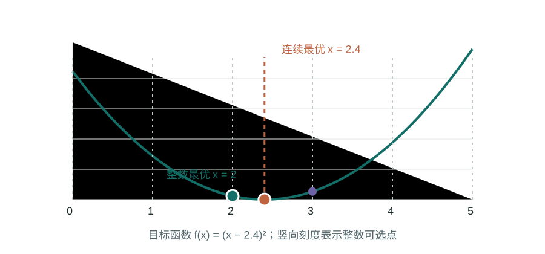

CHAPTER 01 · 1.3 / Continuous versus Discrete Optimization
连续优化与离散优化
决策变量能否取任意实数，决定了问题的几何结构、可用算法和计算难度。连续解不能不加检查地四舍五入成整数解。
变量的取值空间不同
连续优化中，变量通常取自实数区间或实数向量空间。例如机器参数、长度、温度、流量和投资比例，在模型允许的范围内可以取任意实数值。离散优化中，变量只能从有限或可数集合中选择，例如设备数量、开关状态、路径顺序或是否建设某个设施。
差别不只是“有没有小数”。连续问题的可行域通常由曲线、曲面或区域组成；离散问题的可行解是一个个彼此分开的组合。变量类型会改变模型结构，也会改变适用的算法。

同一个目标函数，两种答案
考虑目标函数 。
- 若 ，连续最优解是 x=2.4，目标值为 0。
- 若 ，只能比较整数候选，最优解是 x=2，目标值为 0.16。
目标函数没有变化，改变的是允许选择的变量集合。连续最优值给出了一个下界，但整数问题必须在自己的可行集合中重新求解。
为什么简单取整可能失败
把连续解四舍五入通常不是整数规划算法。假设连续模型包含容量约束 ，某个连续可行点是 (0.6,0.6)。若分别把两个分量四舍五入为 1，得到 (1,1)，它就违反了容量约束。即使取整后的点仍然可行，也不保证它是整数问题的最优解。
不要混淆：“连续松弛的最优解”是放宽整数限制后得到的结果；“整数最优解”是在原离散集合中达到的最佳结果。前者可以帮助构造下界或启发式，但不能直接替代后者。
连续、离散与混合整数
| 类型 | 变量示例 | 典型问题 | 常见方法 |
|---|---|---|---|
| 连续优化 | 实数向量 | 参数拟合、能耗最小化 | 梯度法、牛顿法、内点法 |
| 离散优化 | 整数、二元变量、排列 | 路径、排班、选址 | 动态规划、网络流、分支定界 |
| 混合整数优化 | 连续量 + 整数/二元变量 | 产量与设备启用联合决策 | MILP/MINLP 求解器、分解方法 |
也要避免把“离散”与“难以求解”画等号。最短路径等离散问题可以高效求解；旅行商问题等组合问题在一般情形下则具有很高的计算复杂度。具体难度取决于问题结构，而不是变量名字。
观察连续候选与整数决策
拖动连续候选点。演示会显示该点的目标值，以及最近整数点的目标值；离散问题真正的最优值仍需在所有整数可行点中比较。
连续与整数候选比较
Python：比较两个最优值
"""Compare a continuous optimum with an integer-constrained optimum."""
def objective(x: float) -> float:
return (x - 2.4) ** 2
if __name__ == "__main__":
continuous_x = 2.4
integer_x = min(range(6), key=objective)
print(f"continuous: x={continuous_x:.1f}, f={objective(continuous_x):.2f}")
print(f"integer: x={integer_x}, f={objective(integer_x):.2f}")
assert objective(continuous_x) == 0.0
assert integer_x == 2
assert abs(objective(integer_x) - 0.16) < 1e-12
练习与参考
练习：将目标函数改为 ，连续区间仍为 [0,5]，整数集合仍为 {0,1,2,3,4,5}。求连续最优解和整数最优解，并比较两个目标值。
自检：连续最优点为 2.7；整数最优点为 3，目标值为 0.09。
参考资料
- Jorge Nocedal, Stephen J. Wright, Numerical Optimization, 2nd ed., Springer, 2006，Chapter 1 “Continuous versus Discrete Optimization”。出版社书目。